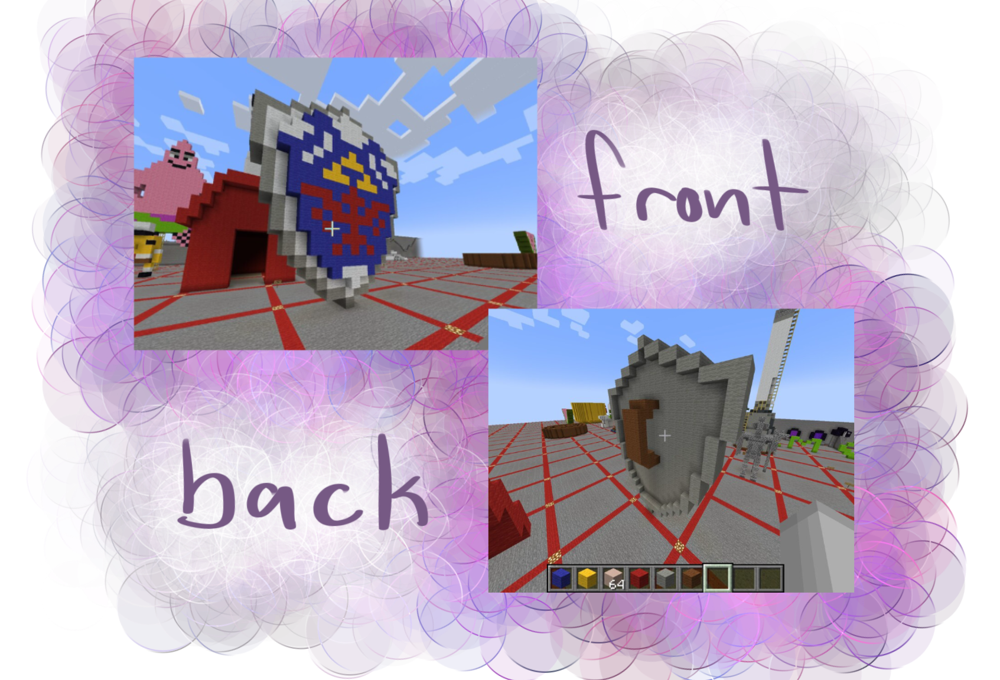
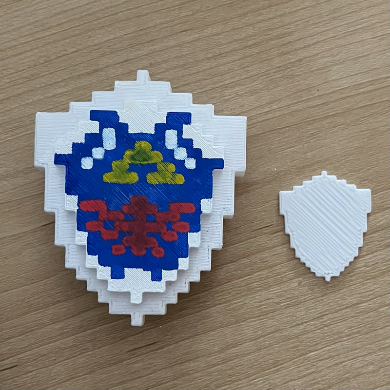
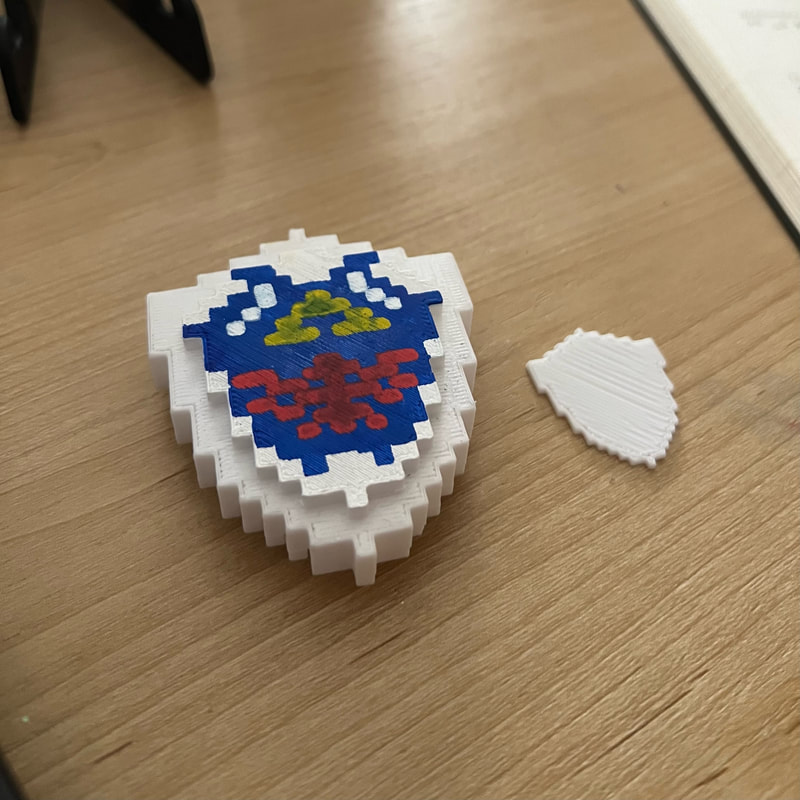

In this project, I made a sculpture in Minecraft that I would use to create a 3D printed piece. The sculpture itself is a block version of the Hylian Sheild from The Legend of Zelda franchise. After making the piece, I used MineWays to grab my piece from Minecraft and convert it into a .stl file where I could finalize it in Meshlab and print it with the latest FlashPrint. After printing the smoothing any rough edges, I used Posca Paint Markers and a small paint brush to paint the piece.


